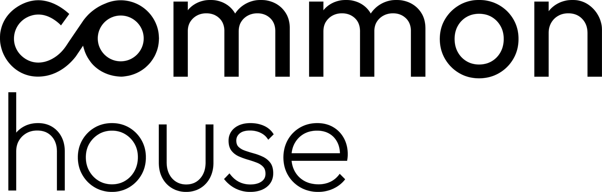

Liderar la transición zero waste desde la operación.

Nunca había existido tanta presión regulatoria, social y comercial sobre los residuos, y el turismo está en el centro.
Un desarrollo turístico de USD 800 millones fue frenado en Quintana Roo en 2025, con los residuos entre las causas y millones de firmas en contra. La licencia social ya define qué se construye.
En Europa ya hay sanciones por publicidad ambiental engañosa a operadores turísticos globales. Los claims sin datos verificables pasaron de marketing a pasivo legal.
Consultoras globales y waste-techs ya venden prevención directamente a las navieras. Quien no ofrezca la capa upstream a sus clientes, la verá pasar por encima.
La industria entera tiene un punto ciego. MPS tiene la báscula.
Fuentes: CLIA Environmental Technologies & Practices 2025; MSC Sustainability Report 2024; NCL Sail & Sustain; Carnival Corporation.
Hoy MPS gana cuando hay más residuos. Con esta estrategia, gana también cuando hay menos, y es el único que puede cobrar por ambas cosas.
Los hoteles flotantes son los únicos que aún no lo hacen.
Aceite de cocina convertido en jabón a bordo y compostaje en circuito cerrado con granjas locales.
Ninguno ataca el packaging que embarca. Ninguno puede verificar por buque en territorio. Ese es el espacio de MPS.
Nacimos de construir sistemas de reuso y zero waste a escala global (Algramo: Chile, EE.UU., Reino Unido, Indonesia). Sabemos lo que funciona porque lo hemos operado.
Lideramos la agenda zero waste rumbo a COP31 junto a la Zero Waste Foundation, con acceso directo a multilaterales, ciudades y fondos climáticos.
Modelo "powered by": firmas expertas en diseño, investigación y economía circular trabajando bajo una sola dirección.
Startups de prevención validadas, con sus fundadores involucrados en cada proyecto.
Convierte aceite de cocina usado en limpiadores en el punto de generación. Premio Global a la Innovación de la Zero Waste Foundation (2025).
SaaS de trazabilidad de residuos y cumplimiento ambiental operando en México, con clientes como PepsiCo, Coca-Cola y Bayer.
Sistemas de recarga para eliminar envases de un solo uso en bebestibles y consumibles.
Common House responde por el fit de cada tecnología. Los fundadores validan cada implementación.
[Placeholder logos: confirmar autorización de uso con cada founder antes de circular.]
La estrategia define el qué. La implementación se hace en sociedad: un vehículo conjunto MPS × Common House para desplegar tecnologías, equipamiento y el sistema de verificación en cruceros y en clientes industriales, hoteleros y retail.
Estructura y términos se diseñan al cierre de la Fase 1.
Viajes y gastos de instancias presenciales se facturan por separado a costo real. Valores netos de retenciones e impuestos aplicables. Duración: 10–12 semanas desde el kick-off.
El zero waste va a llegar a esta industria con o sin nosotros. La pregunta es si MPS lo vende o lo sufre.